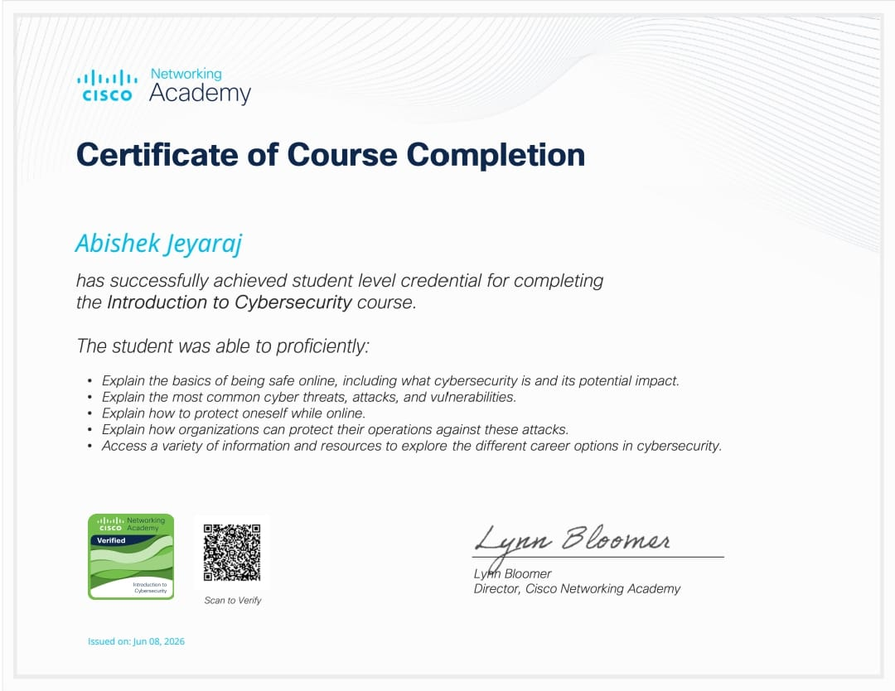

WHAT'S UP
Seeking an internship in software and cybersecurity?
That drive is the whole job. One student doing full-stack development, cloud security, and monitoring for challenges that refuse to look ordinary.
COMPLETED
UPTIME
TURNAROUND
ABOUT ME
I'm a computer science engineering student specializing in full-stack development and cybersecurity.
An aspiring engineer
who thinks in systems.
Currently studying B.E. CSE (2027), I have hands-on experience building full-stack web applications, AI-driven tools, and secure systems.
Recently completed a full-stack development internship where I designed RESTful APIs and optimized frontend interfaces. Now seeking opportunities in software engineering or cybersecurity.
CAPABILITIES
Full-Stack
Development
Building robust web applications using HTML, CSS, JavaScript, and modern backend frameworks like Python/FastAPI and Node.js. Focus on scalable REST APIs and secure architecture.
Security
& Systems
Implementing robust network defense, conducting traffic analysis, and developing vulnerability scanners. Experienced with SOC incident workflows and threat hunting methodologies.
Experience
Full Stack Developer Intern
Developed and maintained web application features using modern frameworks. Collaborated with teams to design RESTful API endpoints and optimized performance to support over 10k requests.
Python Developer Intern
Developed core backend logic using Python. Created automated scripts for data processing and integrated external APIs to enhance application functionality.
CASE STUDIES
A selection of projects where I've built secure, scalable, and resilient systems.
AI X-Ray
Analysis
Built an AI-powered system that analyzes X-ray images and predicts medical conditions using machine learning algorithms.
Web Vuln
Scanner
Full-stack security scanner with a FastAPI backend handling concurrent real-time scan requests and an interactive dashboard.
Saree
Dealership
Responsive e-commerce web app featuring product browsing, secure user authentication, and a fully functional checkout system.
Tools & Platforms
Essential tools and platforms for version control, local server environments, and API testing.
Programming Languages
Core languages used for building dynamic frontends, robust backends, and managing databases.
Frameworks & Core Concepts
Modern frameworks for rapid development and foundational concepts in full-stack architecture.

Professional Certification
Demonstrated expertise and commitment to professional growth.
Abishek consistently demonstrated a sharp eye for spotting vulnerabilities that others missed. His approach to securing our cloud infrastructure was methodical and highly effective.
Incredibly fast learner. Handled our full-stack API integration while independently hardening the backend against common OWASP risks. A highly valuable team member.
READY TO
SECURE IT?
Available for internships, technical roles, or just a chat about systems and security.